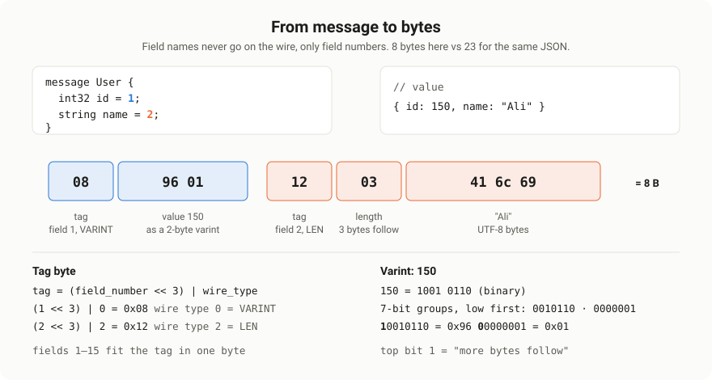
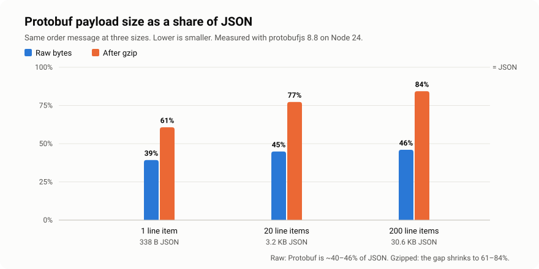
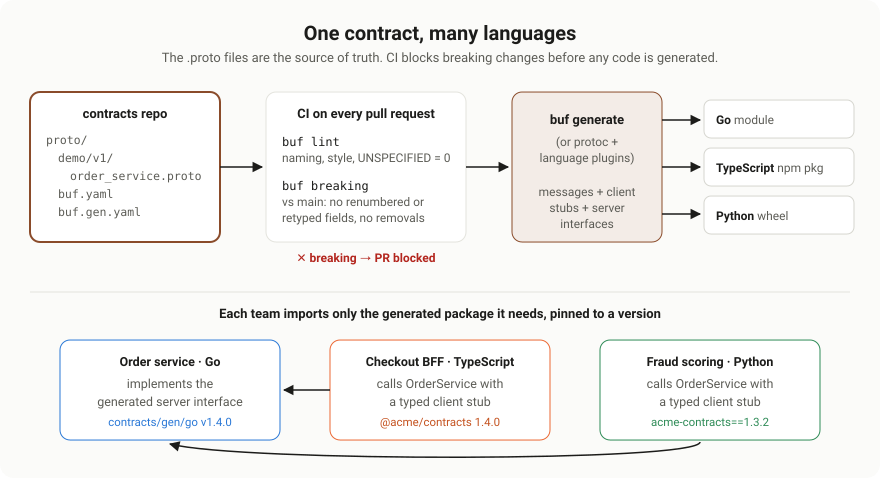
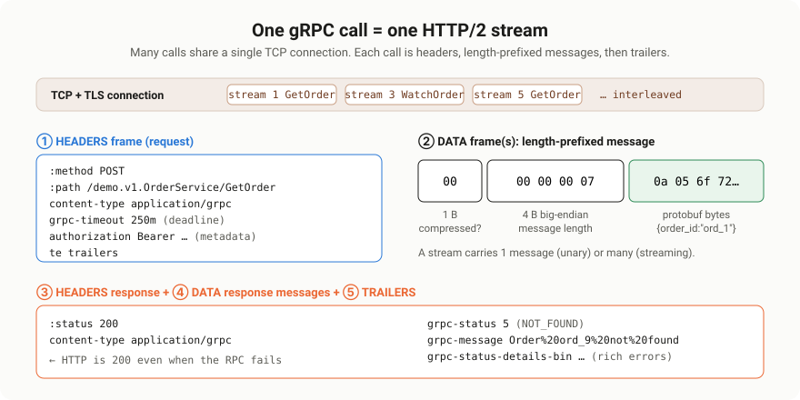

Protocol Buffers & gRPC Deep Dive#
Scope: how to define
.protoschemas well, what Protobuf's binary encoding actually does to your data, how fast and small it really is (measured, not assumed), how schemas evolve without breaking anyone, and how one contract generates typed code for every microservice.Source: extracted and reorganised from
0. md/DOCUMENTATIONS ...md(and its HTML twin) →API DESIGN > API TYPES,GRAPHQL, gRPC… > gRPC(Overal, Docs, FAANG questions, Custom QA, Q&A),Protocol Buffers and Type Safety, andHandling Failures and Fault Mode > gRPC. Gaps were filled from protobuf.dev, grpc.io and the gRPC proposals. Every byte sequence, benchmark and compatibility claim marked measured or tested was run with protobufjs 8.8.0 and @grpc/grpc-js 1.14.4 on Node 24. All diagrams inimages/were drawn for this document.
0. What this document covers#
| Topic | One-line summary |
|---|---|
| What they are | Protobuf is a schema + binary format; gRPC is an RPC framework built on it and HTTP/2 |
| Defining schemas | Messages, types, enums, oneof, maps, presence, well-known types, services, style |
| Wire format | Tags, varints, zigzag, length-delimited fields: byte by byte |
| Speed and size | Measured against JSON: always smaller, faster to decode, not always faster to encode |
| Schema evolution | Which changes are safe, which corrupt data silently, and how reserved protects you |
| Type safety | What generated code guarantees, and what still needs validation |
| Code generation | protoc, Buf, static vs dynamic loading, contract repos, CI gates, publishing |
| gRPC on the wire | One call = one HTTP/2 stream: headers, length-prefixed messages, trailers |
| Choosing | gRPC vs REST vs GraphQL, and when not to use gRPC |
The practical companion to this document, covering the four streaming types, deadlines, interceptors and error handling with a runnable service, is gRPC Practical Patterns & Streaming.
1. What Protobuf and gRPC are#
1.1 Protocol Buffers#
Protocol Buffers (Protobuf) is a language-neutral, platform-neutral way to define structured data once and serialise it to a compact binary format. Google created it for internal use and open-sourced it in 2008.
The idea in one line: **define your data once in a .proto file, generate strongly typed code for every language, and serialise efficiently.**
It has three parts:
- A schema language, the
.protofile. - A compiler,
protoc, plus per-language plugins that generate code. - A binary wire format that the generated code reads and writes.
1.2 gRPC#
gRPC is a high-performance Remote Procedure Call framework. A service calls a method on another machine as if it were a local function:
REST: GET /users/1
gRPC: userService.GetUser({ id: 1 })It looks like a function call, but it runs over the network. gRPC combines two technologies:
- Protocol Buffers define the service contract and encode every message.
- HTTP/2 carries the calls: many concurrent calls multiplexed over one long-lived connection, with compressed headers and native streaming.
Google open-sourced gRPC in 2015 as the successor to its internal RPC system, Stubby. It is now a Cloud Native Computing Foundation project.
On the name. The notes expand gRPC as "Google Remote Procedure Call". The project's official position is that the "g" stands for something different in every release, from "good" to "gravity", and the first release used the recursive "gRPC Remote Procedure Calls". In practice everyone understands the Google origin; just don't state the expansion as fact in an interview.
1.3 How the pieces fit#
- Define the service and messages in a
.protofile. - Generate client stubs and server interfaces for each language.
- Implement the server interface with your business logic.
- Call the server through the generated client, which serialises the request, sends it over HTTP/2, and deserialises the response.
syntax = "proto3";
service UserService {
rpc GetUser(GetUserRequest) returns (User);
}
message GetUserRequest {
int32 id = 1;
}
message User {
string name = 1;
int32 age = 2;
}1.4 Vocabulary#
| Term | Meaning |
|---|---|
| Message | A typed data structure, like a class or DTO |
| Field number | The permanent numeric ID of a field; this, not the name, goes on the wire |
| Service | A named group of RPC methods |
| RPC method | A remotely callable function with a request and response type |
| Stub | Generated client code used to call a service |
| Channel | A client's managed connection to a server address, reused across calls |
| Metadata | Key-value pairs sent with a call, like HTTP headers |
| Deadline | The absolute time by which a call must finish |
| Status | The result of a call: a code such as OK or NOT_FOUND plus a message |
| Interceptor | Middleware that wraps calls on the client or server |
2. Defining .proto schemas#
2.1 Anatomy of a file#
syntax = "proto3"; // or: edition = "2024";
package shop.orders.v1; // namespace + major version
import "google/protobuf/timestamp.proto"; // well-known types
import "shop/common/v1/money.proto"; // your own shared messages
option go_package = "github.com/acme/contracts/gen/go/shop/orders/v1;ordersv1";
option java_multiple_files = true;
option java_package = "com.acme.shop.orders.v1";
service OrderService { ... }
message Order { ... }
enum OrderStatus { ... }- **
syntaxoredition** comes first and sets default behaviour for the file. - **
package** prevents name clashes and should end in a major version such asv1. - **
import** pulls in messages from other files. - **
option** lines control how code is generated for specific languages.
2.2 Scalar types#
| Proto type | Encoding | JS type in @grpc/proto-loader | Use it for |
|---|---|---|---|
double, float | Fixed 8 or 4 bytes | number | Real measurements. Never money |
int32, int64 | Varint | number, or string for int64 with longs: String | Non-negative or rarely negative integers |
uint32, uint64 | Varint | number, or string | Counts and sizes that are never negative |
sint32, sint64 | ZigZag varint | number, or string | Integers that are often negative |
fixed32, fixed64 | Fixed 4 or 8 bytes | number, or string | Values usually larger than 2^28, such as hashes |
sfixed32, sfixed64 | Fixed 4 or 8 bytes | number, or string | Large signed values |
bool | Varint | boolean | Flags |
string | Length-delimited UTF-8 | string | Text. Must be valid UTF-8 |
bytes | Length-delimited | Buffer | Binary data, hashes, encrypted blobs |
Two rules that prevent real bugs:
- **Negative numbers in
int32orint64always take 10 bytes.** Measured: anint32field set to −1 encodes to 11 bytes including its tag; the same value insint32encodes to 2 bytes. Usesint*for fields that are often negative. - **
int64does not fit in a JavaScript number.** Values above 2^53 lose precision. Load withlongs: Stringand convert withBigIntwhen you do arithmetic.
2.3 Messages, nesting, repeated and maps#
message Order {
string order_id = 1;
OrderStatus status = 2;
repeated LineItem items = 3; // ordered list
map<string, string> labels = 4; // key-value map
google.protobuf.Timestamp created_at = 5;
message LineItem { // nested type: Order.LineItem
string sku = 1;
int32 quantity = 2;
Money unit_price = 3;
}
}
message Money {
string currency_code = 1; // ISO 4217, e.g. "USD"
int64 units = 2; // whole units
int32 nanos = 3; // fractional part, 10^-9 units
}- **
repeatedis an ordered list. Scalar numeric repeated fields are packed** by default in proto3, which stores them as one length-delimited block. - **
map<K, V>** keys must be integer or string types. Iteration order is not guaranteed, and a map cannot berepeated. - Nested messages are good for types that only make sense inside the parent. Promote them to top level once another message needs them.
- Money should never be a
double. Use integer units, as inMoneyabove, which mirrors Google'sgoogle.type.Money.
2.4 Enums#
enum OrderStatus {
ORDER_STATUS_UNSPECIFIED = 0; // required first value, means "not set"
ORDER_STATUS_PENDING = 1;
ORDER_STATUS_PAID = 2;
ORDER_STATUS_SHIPPED = 3;
reserved 4; // was ORDER_STATUS_ON_HOLD, removed
reserved "ORDER_STATUS_ON_HOLD";
}- The first value must be zero, and it should mean "unspecified". An unset field reads as 0, so if 0 meant
USERas in the notes'Roleexample, every message that forgot to set the role would silently become a normal user. - Prefix every value with the enum name in
UPPER_SNAKE_CASE. Enum values share a namespace with their siblings in the package, so two enums both containingACTIVEwould collide. - Proto3 enums are open. Tested: an old reader receiving a value it doesn't know, such as 2, keeps the raw number 2 instead of failing. Code must handle unknown values.
2.5 oneof#
A oneof holds at most one of its fields at a time. Setting one clears the others.
message ContactMethod {
oneof method {
string email = 1;
string phone = 2;
PushToken push = 3;
}
}Use it for "exactly one of these" data. Generated code exposes which field is set, for example message.method === "phone" with proto-loader's oneofs: true. A oneof cannot contain repeated or map fields.
2.6 Field presence: zero vs unset#
This is the most misunderstood part of proto3.
| Declaration | Presence | Can you tell "unset" from zero? | Wire behaviour, measured |
|---|---|---|---|
int32 count = 1; | Implicit | No | Value 0 is not written at all: 0 bytes |
optional int32 count = 1; | Explicit | Yes, hasCount() or own-property check | Value 0 is written: 2 bytes |
Message field = 1; | Explicit | Yes | Written if set |
repeated, map | None | Empty equals unset | Nothing written when empty |
The notes' comment string name = 1; // optional (proto3 default) is misleading. Every proto3 field can be absent, but a plain scalar field cannot tell you whether it was absent. A decoded name is simply "". Add the optional keyword whenever "not provided" and "empty or zero" must mean different things, which is essential for partial updates.
2.7 Well-known types#
Google ships common messages in google/protobuf/*. Use them instead of inventing your own.
| Type | Represents | Why use it |
|---|---|---|
Timestamp | A point in time: seconds + nanos since the Unix epoch, UTC | Unambiguous; maps to native date types; JSON as RFC 3339 |
Duration | A signed span of time | Timeouts, TTLs; JSON as "1.5s" |
FieldMask | A list of field paths | Partial updates and partial reads: update_mask: "email,address.city" |
Empty | No data | Request or response with nothing in it |
Any | Any message plus its type URL | Extensible payloads such as error details |
Struct, Value | Arbitrary JSON-like data | Genuinely schemaless blobs, sparingly |
StringValue, Int32Value, … | Nullable scalars | Legacy presence workaround; prefer optional now |
2.8 Services and RPC methods#
service OrderService {
rpc GetOrder(GetOrderRequest) returns (Order); // unary
rpc WatchOrder(WatchOrderRequest) returns (stream OrderEvent); // server streaming
rpc UploadItems(stream LineItem) returns (UploadSummary); // client streaming
rpc Chat(stream ChatMessage) returns (stream ChatMessage); // bidirectional
}The stream keyword on either side selects the call type. The practical patterns for each are in the companion document.
2.9 Design and style rules#
- Give every RPC its own request and response message, even if it has one field today.
rpc GetOrder(GetOrderRequest) returns (Order)can grow new request fields without a breaking change;rpc GetOrder(google.protobuf.StringValue)cannot. - Version packages, not fields.
package shop.orders.v1;and latershop.orders.v2, served side by side during migration. - Naming:
PascalCasefor messages, services and RPCs;lower_snake_casefor fields; files inlower_snake_case.proto; enum values inUPPER_SNAKE_CASEprefixed with the enum name. - Reserve numbers 1 to 15 for the most frequent fields. Their tags take one byte; 16 to 2047 take two.
- Pluralise repeated fields:
repeated LineItem items. - Use standard method names where they fit:
Get,List,Create,Update,Delete, as described in Google's API design guide. - **Paginate
Listmethods** withpage_sizeand an opaquepage_token, returningnext_page_token. - Comment every field; comments flow into generated code and documentation.
2.10 Editions: the successor to proto2 and proto3#
Protobuf Editions replace the syntax = "proto2" and syntax = "proto3" split with a yearly edition and per-feature switches. Edition 2023 unified proto2 and proto3 behaviour; edition 2024 is the latest released edition.
edition = "2024";
package shop.orders.v1;
message Order {
string order_id = 1;
int32 retry_count = 2 [features.field_presence = IMPLICIT]; // opt back into proto3 behaviour
}The biggest default change: editions use explicit presence for every field, the equivalent of writing optional everywhere in proto3. Proto3 files remain fully supported and can import and be imported by edition files, so there is no need to migrate existing contracts in a hurry.
2.11 Complete example#
This is the contract used by the runnable service in the companion document, where every RPC in it is tested:
order_service.proto
syntax = "proto3";
package demo.v1;
import "google/protobuf/timestamp.proto";
// The four RPC shapes, on one realistic service.
service OrderService {
// Unary: one request, one response.
rpc GetOrder(GetOrderRequest) returns (Order);
// Server streaming: one request, a stream of status updates.
rpc WatchOrder(WatchOrderRequest) returns (stream OrderEvent);
// Client streaming: the client uploads many line items, gets one summary.
rpc UploadItems(stream LineItem) returns (UploadSummary);
// Bidirectional streaming: live support chat about an order.
rpc Chat(stream ChatMessage) returns (stream ChatMessage);
}
// A downstream dependency, used to show deadline propagation.
service InventoryService {
rpc CheckStock(CheckStockRequest) returns (CheckStockResponse);
}
enum OrderStatus {
ORDER_STATUS_UNSPECIFIED = 0;
ORDER_STATUS_PENDING = 1;
ORDER_STATUS_PAID = 2;
ORDER_STATUS_SHIPPED = 3;
ORDER_STATUS_DELIVERED = 4;
}
message GetOrderRequest {
string order_id = 1;
}
message Order {
string order_id = 1;
OrderStatus status = 2;
repeated LineItem items = 3;
int64 total_cents = 4;
bool in_stock = 5;
}
message WatchOrderRequest {
string order_id = 1;
}
message OrderEvent {
string order_id = 1;
OrderStatus status = 2;
google.protobuf.Timestamp at = 3;
}
message LineItem {
string sku = 1;
int32 quantity = 2;
int64 unit_price_cents = 3;
}
message UploadSummary {
int32 item_count = 1;
int64 total_cents = 2;
}
message ChatMessage {
string from = 1;
string text = 2;
}
message CheckStockRequest {
repeated string skus = 1;
}
message CheckStockResponse {
bool all_in_stock = 1;
}3. Binary serialisation: the wire format#

3.1 The core idea#
A Protobuf message on the wire is just a sequence of key-value records:
[tag][value] [tag][value] [tag][value] ...There is no schema, no field names, no delimiters and no message length inside the bytes. The reader must already know the .proto to interpret them. This is exactly why the encoding is compact, and why it is unreadable without the schema.
3.2 Tags and wire types#
Every record starts with a tag, a varint combining the field number and a 3-bit wire type:
tag = (field_number << 3) | wire_type| Wire type | ID | Used for |
|---|---|---|
| VARINT | 0 | int32, int64, uint32, uint64, sint32, sint64, bool, enum |
| I64 | 1 | fixed64, sfixed64, double |
| LEN | 2 | string, bytes, embedded messages, packed repeated fields |
| SGROUP, EGROUP | 3, 4 | Deprecated proto2 groups |
| I32 | 5 | fixed32, sfixed32, float |
The wire type tells a reader how many bytes to skip for a field it doesn't recognise. That single property is what makes forward compatibility possible.
3.3 Varints#
A varint stores an integer in 7-bit groups, least significant group first. The top bit of each byte is a continuation flag: 1 means another byte follows.
150 in binary = 1001 0110
split into 7-bit groups = 0000001 0010110
low group first = 0010110 0000001
add continuation bits = 1 0010110 0 0000001
bytes = 0x96 0x01So small numbers are tiny: 0 to 127 take one byte, 128 to 16,383 take two.
3.4 ZigZag for negative numbers#
Plain varints treat negative numbers as huge unsigned values, so −1 becomes ten bytes. sint32 and sint64 first apply ZigZag encoding, which maps small negative and positive numbers to small unsigned ones:
| Original | ZigZag |
|---|---|
| 0 | 0 |
| −1 | 1 |
| 1 | 2 |
| −2 | 3 |
| 2 | 4 |
3.5 Length-delimited fields#
Strings, bytes, embedded messages and packed arrays use wire type 2: a tag, then a varint length, then that many bytes.
3.6 Measured byte sequences#
Every line below was produced by encoding with protobufjs and matches the examples in the official encoding guide.
| Message and value | Bytes | Breakdown |
|---|---|---|
int32 a = 1 set to 150 | 08 96 01 | tag field 1 VARINT, varint 150 |
string b = 2 set to "testing" | 12 07 74 65 73 74 69 6e 67 | tag field 2 LEN, length 7, UTF-8 |
Test1 c = 3 with c.a = 150 | 1a 03 08 96 01 | tag field 3 LEN, length 3, the nested message |
repeated int32 nums = 4 set to 3, 270, 86447 | 22 06 03 8e 02 af a3 05 | one LEN record holding 3 varints: packed |
int32 set to −1 | 08 ff ff ff ff ff ff ff ff ff 01 | 11 bytes: negative varint is always 10 bytes |
sint32 set to −1 | 10 01 | 2 bytes: ZigZag maps −1 to 1 |
implicit int32 set to 0 | nothing | default values are not written at all |
optional int32 set to 0 | 10 00 | explicit presence writes the zero |
User{id:1, name:"Ali", email:"ali@mail.com"} | 21 bytes | the same object as JSON is 44 bytes |
3.7 Rules that fall out of the format#
- Field numbers are permanent. They are the only identity a field has on the wire.
- Valid field numbers are 1 to 536,870,911, except 19,000 to 19,999, which are reserved for the Protobuf implementation.
- Numbers 1 to 15 cost one tag byte, so spend them on frequently set fields.
- Default values cost zero bytes, which is why implicit-presence fields can't tell "unset" from zero.
- Field order in the bytes doesn't matter, and a repeated scalar field is last-one-wins when read as singular.
- Serialisation is not canonical. Map ordering and unknown-field placement can differ between languages and library versions. Never hash or sign serialised bytes and expect another service to reproduce them; the notes' "same input → same binary output" only holds within one binary using deterministic mode.
4. Speed and size, measured#
The notes list "faster and smaller than JSON" as a headline benefit, and cite "30–70% latency reduction". Size is reliably true. Speed depends heavily on the language and library, so it was measured here rather than assumed.
4.1 Method#
An Order message with an enum, a nested Money, a timestamp, tags and N line items was encoded as JSON with JSON.stringify and as Protobuf with protobufjs, at 1, 20 and 200 line items. Throughput was measured in operations per second after JIT warm-up, on Node 24 on an Apple M1, and the benchmark was run twice.
4.2 Size#

| Line items | JSON | Protobuf | Protobuf ÷ JSON | JSON gzipped | Protobuf gzipped | Protobuf ÷ JSON, gzipped |
|---|---|---|---|---|---|---|
| 1 | 338 B | 133 B | 39% | 242 B | 147 B | 61% |
| 20 | 3,198 B | 1,435 B | 45% | 428 B | 331 B | 77% |
| 200 | 30,627 B | 14,076 B | 46% | 1,947 B | 1,642 B | 84% |
- Raw Protobuf is less than half the size of JSON, because field names, quotes, braces and decimal digits never go on the wire.
- Compression narrows the gap sharply. Repeated JSON field names compress extremely well, so a gzipped JSON payload of 200 items is only 19% bigger than gzipped Protobuf.
- Tiny messages don't compress. At 1 item, gzip made Protobuf *larger*, 133 to 147 bytes, because of gzip's header overhead.
4.3 Speed in JavaScript#
Rounded operations per second; higher is faster.
| Line items | JSON encode | Protobuf encode | JSON decode | Protobuf decode |
|---|---|---|---|---|
| 20 | ~175,000–234,000 | ~173,000–178,000 | ~112,000–128,000 | ~180,000–199,000 |
| 200 | ~27,000 | ~19,000–20,000 | ~14,000 | ~21,000 |
- Decoding Protobuf was about 1.5 times faster than
JSON.parsefor realistic messages. - Encoding was not faster. For 200 items protobufjs encoded about 30% *slower* than V8's native, C++-implemented
JSON.stringify. - A full round trip was roughly a tie at 20 and 200 items.
Conclusion: in Node.js, Protobuf's win is size and a typed contract, not raw CPU. In languages whose Protobuf libraries are compiled rather than written in JavaScript, such as Go, Java, C++ and Rust, published benchmarks generally show larger serialisation speedups, but measure your own payloads before quoting a number.
4.4 Where gRPC's real-world speed comes from#
Serialisation is usually a small fraction of a request's latency. The larger gains come from the transport:
- Persistent connections. One HTTP/2 connection is reused for thousands of calls, avoiding a TCP and TLS handshake per request.
- Multiplexing. Many concurrent calls share that connection without HTTP/1.1's one-request-at-a-time limit.
- HPACK header compression. Repeated headers such as
:pathandauthorizationshrink to a few bytes after the first call. - Smaller payloads. Less data to send, which matters most on mobile and cross-region links.
- Generated code. No hand-written parsing or validation of shapes.
A latency figure like the notes' "30–70%" is plausible for chatty service-to-service traffic over HTTP/1.1 without keep-alive, but it describes a specific workload, not a law. REST over HTTP/2 with connection reuse closes much of that gap.
One nuance on head-of-line blocking: HTTP/2 removes HTTP-level head-of-line blocking, as the notes say, but all streams still share one TCP connection, so a single lost packet stalls every stream until it is retransmitted. HTTP/3 over QUIC removes that too.
5. Schema evolution and compatibility#
Contracts change constantly. Protobuf is designed so that old and new code can exchange messages, provided you follow a small set of rules.
- Backward compatible: new code can read data written by old code.
- Forward compatible: old code can read data written by new code.
5.1 What each change actually does (tested)#
Each row was tested by encoding with one schema and decoding with the other in protobufjs.
| Change | Result | Verdict |
|---|---|---|
| Add a new field with a new number | New reader sees default for missing field; old reader skips the unknown field | ✅ Safe |
Remove a field and reserved its number and name | Old data with that number is skipped | ✅ Safe |
| Rename a field, same number | Binary unaffected: decoded as user_id / full_name | ⚠️ Binary safe, breaks JSON and generated code |
int32 to int64, same number | Decoded correctly: id: "7" | ✅ Safe (also uint32↔uint64, bool) |
| Add a value to an enum | Old reader keeps the raw number 2 | ✅ Safe if code handles unknown values |
repeated string read as singular string | Old reader keeps the last element only: "c" | ⚠️ Lossy |
Change type with a different wire type: int32 to string | Field silently dropped: {"name":"Ali"} | ❌ Breaking, silent |
Renumber a field: name from 2 to 5 | Name silently lost: name: "" | ❌ Breaking, silent |
Reuse a deleted number for a new string field | Old name bytes decoded as nickname: "Ali" | ❌ Silent data corruption |
The dangerous rows don't throw. They produce valid-looking but wrong data, which is far worse than a crash.
5.2 Always reserve deleted fields#
message User {
reserved 2, 15, 9 to 11;
reserved "name", "legacy_score";
int32 id = 1;
string display_name = 3;
}reserved makes the compiler reject any future attempt to reuse the number or name. Tested: protobufjs refused a schema that reused a reserved number with id 2 is reserved in Type User.
The notes suggest keeping removed fields and marking them deprecated. That's a valid transitional step, string name = 2 [deprecated = true];, but the end state is deletion plus reserved.
5.3 Unknown fields: a Node.js gotcha#
When an old reader decodes a message containing fields it doesn't know, the official C++, Java, Go and Python libraries preserve those unknown fields and write them back out if the message is re-serialised. The notes' "ignored safely" undersells this; preservation is what lets a proxy on old code pass new data through untouched.
Tested: protobufjs does not preserve them. A 22-byte message from a newer schema, decoded and re-encoded by the older schema, came out as 7 bytes; the email and roles fields were gone.
Consequence: a Node.js service that decodes, modifies and re-encodes messages, such as a gateway, enricher or queue consumer, strips any fields added after it was deployed. Either redeploy it with the new schema first, or forward the original bytes instead of re-encoding.
5.4 Compatibility checklist#
- ✅ Add fields with new numbers.
- ✅ Delete fields, then
reservedthe number and the name. - ✅ Add enum values; handle unknown values in code.
- ✅ Add new RPC methods and new services.
- ❌ Never change a field's number.
- ❌ Never reuse a number or name, even years later.
- ❌ Never change a field's type unless the pair is listed as compatible.
- ❌ Never rename a field or enum value if anything uses the JSON mapping.
- ❌ Never rename a package, service or method. The method's full name, such as
/demo.v1.OrderService/GetOrder, is the URL path clients call. - ❌ Never move a field into or out of a
oneof. - ✅ For genuinely breaking redesigns, create a new package version such as
v2and run both.
5.5 Deployment order#
- Adding a field: deploy readers first so nothing strips or ignores it, then writers.
- Removing a field: stop writing it, deploy all writers, then stop reading it, then delete and reserve it.
- Enforce the rules in CI with
buf breaking, covered in section 7.
6. Type safety: what you get and what you don't#
6.1 What Protobuf gives you#
| Feature | JSON | Protobuf |
|---|---|---|
| Schema | Optional (JSON Schema, OpenAPI) | Required |
| Types | Loose: numbers, strings, no int64 | Strict: 15 scalar types, enums, messages |
| Checked at | Runtime, if you add validation | Compile time in typed languages, plus runtime |
| Contract drift | Discovered in production | Caught when code is regenerated |
| Readability | Human-readable | Binary, needs the schema |
In statically typed languages such as Go, Java, C# and TypeScript with generated types, sending a string where an int32 is expected is a compile error.
6.2 The limits, tested in JavaScript#
| Call | Result | Lesson |
|---|---|---|
User.verify({ id: "abc" }) | "id: integer expected" | verify catches wrong types |
User.verify({ emial: "typo" }) | null, no error | Unknown and misspelled keys are not reported |
User.verify({ email: "" }) | null, no error | No business rules: nothing is required |
User.fromObject({ id: "abc" }).id | 0 | Silent coercion |
User.fromObject({ id: 3000000000 }).id | -1294967296 | Silent int32 overflow |
User.encode({ id: "abc", name: 42 }) without verify | Decodes as {} | Bad input produces wrong data, not an error |
Proto3 has no "required" fields; they were removed deliberately because a required field can never be safely removed. Business validation, such as "email is non-empty and looks like an email", needs a separate layer:
- protovalidate, from Buf, puts rules in the schema and enforces them in each language:
import "buf/validate/validate.proto";
message CreateUserRequest {
string email = 1 [(buf.validate.field).string.email = true];
int32 age = 2 [(buf.validate.field).int32 = { gte: 13, lte: 150 }];
}- Or validate explicitly in the handler and return
INVALID_ARGUMENTwith field details.
6.3 Mini project: Protobuf in Node.js#
The notes' mini project, corrected to validate before encoding and to show presence and the limits of verify:
user.proto
syntax = "proto3";
package demo.v1;
message User {
int32 id = 1;
string name = 2;
string email = 3;
repeated string roles = 4;
optional string nickname = 5; // explicit presence: "unset" differs from ""
}index.js
// index.js — define once, validate, encode, decode.
const protobuf = require("protobufjs");
async function run() {
const root = await protobuf.load("user.proto");
const User = root.lookupType("demo.v1.User");
const payload = { id: 150, name: "Ali", email: "ali@mail.com", roles: ["admin"] };
// 1. Validate BEFORE encoding. fromObject/encode coerce silently otherwise:
// "abc" -> 0 and 3_000_000_000 -> -1294967296 for an int32.
const problem = User.verify(payload);
if (problem) throw new Error(`Invalid User: ${problem}`);
// 2. Encode to bytes.
const bytes = User.encode(User.fromObject(payload)).finish();
console.log("protobuf:", bytes.length, "bytes", Buffer.from(bytes).toString("hex"));
console.log("json: ", Buffer.byteLength(JSON.stringify(payload)), "bytes");
// 3. Decode, then convert to a plain object with explicit options.
const decoded = User.toObject(User.decode(bytes), { defaults: true });
console.log("decoded: ", decoded);
// 4. Presence: only `optional` fields can tell "unset" from "empty".
const message = User.decode(bytes);
console.log("has nickname?", Object.prototype.hasOwnProperty.call(message, "nickname"));
// 5. verify() catches wrong types, not business rules or typos in field names.
console.log(User.verify({ id: "150" })); // "id: integer expected"
console.log(User.verify({ emial: "typo" })); // null -> unknown keys are NOT reported
}
run().catch((err) => { console.error(err); process.exit(1); });Actual output:
protobuf: 29 bytes 0896011203416c691a0c616c69406d61696c2e636f6d220561646d696e
json: 64 bytes
decoded: { roles: [ 'admin' ], id: 150, name: 'Ali', email: 'ali@mail.com' }
has nickname? false
id: integer expected
null7. Code generation across microservices#

7.1 What gets generated#
From one .proto, each language plugin produces:
| Artifact | Contents | Used by |
|---|---|---|
| Message types | Classes or structs with typed fields, builders, encode and decode | Everyone |
| Client stub | One method per RPC that serialises, sends and deserialises | Callers |
| Server interface or base class | One abstract method per RPC to implement | The service owner |
| Service descriptor | Method names, paths, streaming flags | The gRPC runtime, reflection, tools |
7.2 Static generation vs dynamic loading#
| Approach | How | Pros | Cons |
|---|---|---|---|
| Static codegen | protoc or buf generate writes source files at build time | Full IDE types and autocompletion; compile-time errors; fastest | Build step; generated code to version |
| Dynamic loading | @grpc/proto-loader parses .proto at runtime | No build step; quick prototypes | No compile-time types in plain JS; errors surface at runtime |
Go, Java, C# and Rust effectively always use static generation. Node.js commonly uses @grpc/proto-loader in JavaScript, and static generation such as protoc-gen-es or ts-proto in TypeScript codebases. The companion document's runnable service uses dynamic loading so it has no build step.
7.3 Generating with protoc#
These commands show the standard invocations; they were not executed in this environment.
# Go: messages + gRPC stubs
protoc -I proto \
--go_out=gen/go --go_opt=paths=source_relative \
--go-grpc_out=gen/go --go-grpc_opt=paths=source_relative \
proto/demo/v1/order_service.proto
# Python: messages + gRPC stubs
python -m grpc_tools.protoc -I proto \
--python_out=gen/py --grpc_python_out=gen/py \
proto/demo/v1/order_service.protoJava projects typically generate through the Gradle com.google.protobuf plugin or the Maven protobuf-maven-plugin rather than calling protoc directly.
The pain with raw protoc is keeping compiler and plugin versions identical on every developer machine and CI runner. That problem is what Buf solves.
7.4 Generating with Buf#
Buf is the de-facto modern toolchain: one binary for linting, breaking-change detection and code generation, with remote plugins so nobody installs protoc. These configuration files were not executed in this environment.
buf.yaml, at the repository root:
version: v2
modules:
- path: proto
lint:
use:
- STANDARD
breaking:
use:
- FILEbuf.gen.yaml:
version: v2
managed:
enabled: true
override:
- file_option: go_package_prefix
value: github.com/acme/contracts/gen/go
plugins:
- remote: buf.build/protocolbuffers/go
out: gen/go
opt: paths=source_relative
- remote: buf.build/grpc/go
out: gen/go
opt: paths=source_relative
- remote: buf.build/bufbuild/es
out: gen/tsDaily commands:
buf lint # style: naming, enum zero values, package versions
buf breaking --against '.git#branch=main' # fail on incompatible changes vs main
buf generate # write gen/go and gen/tsbuf breaking automates section 5: it rejects renumbered fields, type changes, removed fields that aren't reserved, and renamed RPCs, before the change can merge.
7.5 Where the .proto files live#
From the notes: microservices don't need to share one directory, and large systems usually keep protos in a dedicated contract repository as the single source of truth. The main options:
| Strategy | How it works | Good for | Watch out for |
|---|---|---|---|
| Monorepo | All services and protos in one repo; build generates code | One organisation, one build system | Needs strong build tooling at scale |
| Contracts repo | A contracts repo owns every .proto; CI publishes generated packages | Polyglot services in many repos | Needs a release process and versioning |
| Schema registry | Protos pushed to a registry such as the Buf Schema Registry; clients pull generated SDKs | Many teams, external consumers | Another system to run or pay for |
Copy the .proto into each service | Each repo has its own copy | Prototypes only | Copies drift apart; not for production |
7.6 A workable pipeline#
- **A pull request edits a
.proto** in the contracts repository. - **CI runs
buf lintandbuf breaking** against the main branch. Breaking changes fail the build. - Reviewers include a consumer, not just the owning team.
- **On merge, CI runs
buf generate** and publishes versioned packages: a Go module tag, an npm package, a Python wheel. - Each service upgrades the dependency on its own schedule. Additive changes mean old versions keep working.
- Server owners deploy support before clients rely on it.
Commit generated code or not? Committing it makes builds hermetic and diffs reviewable, which Go projects commonly prefer. Generating it in the build keeps repositories small and avoids stale files. Either works; the non-negotiable is that everyone generates from the same .proto version with the same plugin versions.
8. gRPC on the wire#

8.1 One call is one HTTP/2 stream#
A client opens one long-lived HTTP/2 connection per server address, called a channel, and each RPC becomes a stream on it:
- Request HEADERS:
:method POST,:path /package.Service/Method,content-type: application/grpc, optionalgrpc-timeout, plus your metadata. - Request DATA: one or more length-prefixed messages.
- Response HEADERS:
:status 200and response metadata. - Response DATA: zero or more length-prefixed messages.
- TRAILERS:
grpc-status,grpc-message, and optionallygrpc-status-details-bin.
8.2 The length-prefixed message#
+------------------+-----------------------------+----------------------+
| Compressed-Flag | Message-Length | Message |
| 1 byte (0 or 1) | 4 bytes, big-endian uint32 | Protobuf bytes |
+------------------+-----------------------------+----------------------+The 5-byte prefix is what lets many messages flow on one stream, and it is why gRPC imposes a maximum message size: the default receive limit is 4 MB in most implementations.
8.3 Status lives in trailers#
The HTTP status is 200 even when the RPC fails. The real outcome is grpc-status in the trailers, sent after the last message, because a streaming call can fail after sending many successful messages.
This is also why browsers cannot call gRPC directly: browser fetch does not expose HTTP trailers or fine-grained HTTP/2 control. The solutions are:
- gRPC-Web, which encodes trailers into the body and needs a proxy such as Envoy.
- Connect, a protocol and set of libraries compatible with gRPC and gRPC-Web that also supports plain HTTP POST with JSON.
- JSON transcoding, in Envoy or
grpc-gateway, exposing REST endpoints fromgoogle.api.httpannotations.
8.4 JSON mapping#
Protobuf defines a canonical JSON form, used by transcoding gateways and debugging tools:
| Proto | JSON |
|---|---|
Field order_id | Key orderId, lowerCamelCase |
int64, uint64 | String, "9007199254740993" |
enum | Value name, "ORDER_STATUS_PAID" |
bytes | Base64 string |
Timestamp | RFC 3339 string, "2026-09-13T14:05:00Z" |
Duration | String, "1.500s" |
| Default values | Omitted by default |
Because JSON uses field names, renaming a field is a breaking change for any JSON consumer even though the binary format doesn't care.
9. gRPC vs REST vs GraphQL#
| Feature | REST | GraphQL | gRPC |
|---|---|---|---|
| Model | Resources and HTTP verbs | Query language over a typed graph | Methods on services |
| Contract | Optional (OpenAPI) | Required schema | Required .proto |
| Payload | JSON text | JSON text | Protobuf binary |
| Transport | HTTP/1.1, 2 or 3 | Usually HTTP POST | HTTP/2 |
| Streaming | No; use SSE or WebSocket | Subscriptions | Native, four call types |
| Browser support | Native | Native | Needs gRPC-Web or Connect |
| HTTP caching | Excellent | Poor | None |
| Human-readable | Yes | Yes | No; needs grpcurl and the schema |
| Code generation | Optional | Common | Central |
| Deadlines and cancellation | Client-side only | Per resolver | Built in, propagated |
| Error model | HTTP status codes | errors array, partial data | 17 status codes, rich details |
| Best for | Public APIs, CRUD, caching | Frontends with varied data needs | Internal service-to-service, streaming |
A correction to the notes' tables: REST is not tied to HTTP/1.1. It runs perfectly well over HTTP/2 and HTTP/3. The accurate difference is that gRPC requires HTTP/2 and depends on its features.
The common real-world split: GraphQL or REST at the edge for browsers and mobile apps; gRPC between internal services; both often in the same system.
9.1 When to use gRPC#
- ✅ Internal microservice communication, especially polyglot.
- ✅ Low-latency, high-throughput calls.
- ✅ Streaming: live updates, telemetry, chat, large uploads.
- ✅ Strict contracts shared by many teams.
- ✅ Mobile clients on poor networks, where payload size matters.
9.2 When not to#
- ❌ Public APIs for third-party developers who expect
curland JSON. - ❌ Browser-first apps without a gRPC-Web or Connect layer.
- ❌ Simple CRUD apps where HTTP caching and simplicity matter more than speed.
- ❌ Teams without the tooling or appetite for schema management.
9.3 Common production problems, from the notes#
| Problem | Cause | Fix |
|---|---|---|
| Connection leaks | Creating a new client per request | Create one client per target and reuse it |
| No or wrong timeouts | Calls without deadlines hang forever | Default deadline on every unary call |
| Large payloads | Messages over the 4 MB default | Paginate, stream, or raise the limit deliberately |
.proto version mismatch | Services built from different contract versions | Contracts repo, buf breaking, reserved fields |
| Uneven load | Layer 4 load balancer pins long-lived HTTP/2 connections | Client-side round_robin or a Layer 7 proxy |
| Hard debugging | Binary payloads | grpcurl with server reflection, logging interceptors |
| N+1 RPC calls | Fetching related data one call at a time | Batch RPCs such as BatchGetUsers |
10. Corrections to the notes#
| Notes say | Accurate version |
|---|---|
| gRPC means "Google Remote Procedure Call" | Officially the "g" changes every release; the Google origin is real |
string name = 1; // optional (proto3 default) | Plain proto3 scalars can't distinguish unset from empty; use optional for presence |
enum Role { USER = 0; ADMIN = 1; } | Zero should be ROLE_UNSPECIFIED, or unset roles silently become USER |
| Removing fields is risky, mark deprecated | Deprecate during migration, then delete and reserved the number and name |
| Unknown fields are ignored safely | Official C++/Java/Go/Python libraries preserve them; protobufjs drops them on re-encode (tested) |
| Deterministic serialisation: same input → same output | Only within one binary in deterministic mode; not canonical across languages or versions |
| Type mismatch → validation fails or decoding error | Mismatched wire types are usually skipped silently (tested) |
| REST uses HTTP/1.1 | REST works over HTTP/1.1, 2 and 3; gRPC is the one that requires HTTP/2 |
| gRPC is 30–70% faster in real systems | Workload-dependent; in Node.js, measured encode speed was not faster than native JSON |
| HTTP/2 multiplexing avoids head-of-line blocking | At the HTTP layer; TCP-level head-of-line blocking remains until HTTP/3 |
11. Q&A#
Protobuf fundamentals#
What is Protobuf? A language-neutral schema language and compact binary serialisation format from Google, with code generation for many languages.
Why use it instead of JSON? Smaller payloads, faster decoding, a required schema, strong types and generated code. The trade-off is that payloads aren't human-readable.
**What is a .proto file?** The schema: messages, enums and services. It is a contract, not business logic.
What is a field number? The permanent numeric identifier of a field. It, not the field name, is written on the wire.
What is a tag? A varint combining the field number and wire type: (field_number << 3) | wire_type.
What is a varint? A variable-length integer using 7 bits per byte with a continuation bit, so small numbers take one byte.
**Why use sint32 instead of int32?** Negative int32 values always take 10 bytes. sint32 uses ZigZag encoding, so −1 takes one byte.
What is packed encoding? Repeated scalar numbers stored as one length-delimited block instead of a tag per element. Default in proto3.
**What is oneof?** A group of fields where at most one can be set at a time.
What is field presence? Whether you can tell a field was unset versus set to its default. Proto3 scalars need optional for it; editions default to explicit presence.
Why must an enum's first value be zero and mean "unspecified"? Unset enum fields decode as 0, so 0 must not mean a real business value.
What are well-known types? Standard messages such as Timestamp, Duration, FieldMask, Any and Empty.
What are Protobuf Editions? The replacement for proto2 and proto3 syntax: a yearly edition with per-feature settings. Edition 2024 is the latest; proto3 remains supported.
Evolution and compatibility#
What is backward compatibility? New code can read data produced by old code.
What is forward compatibility? Old code can read data produced by new code, by skipping unknown fields.
How do you add a field safely? Give it a new, never-used field number. Readers without it skip it; readers with it see a default for old data.
How do you remove a field safely? Stop using it, then delete it and add reserved for its number and name.
What happens if you reuse a field number? Old data is decoded as the new field. Tested: an old name string was read as a new nickname, silent corruption with no error.
What happens if you change a field's type? If the wire type differs, the field is silently skipped. Only specific pairs such as int32↔int64 are compatible.
Is renaming a field safe? For binary, yes. For the JSON mapping and for generated code, no.
Do unknown fields survive a decode and re-encode? In the official C++, Java, Go and Python libraries, yes. In protobufjs, no (tested), so Node.js intermediaries can strip new fields.
**How does buf breaking help?** It compares the schema against a previous version, such as the main branch, and fails CI on incompatible changes.
Performance#
Is Protobuf always faster than JSON? Always smaller. Decoding is typically faster. Encoding in JavaScript measured slower than native JSON.stringify for large messages; compiled languages generally show bigger gains.
Does gzip change the size comparison? Yes. Measured: raw Protobuf was 39–46% of JSON; gzipped it was 61–84%.
Why is gRPC fast in practice? Mostly persistent multiplexed HTTP/2 connections and header compression, plus smaller payloads and generated code.
gRPC fundamentals#
What is gRPC? An RPC framework that uses Protobuf for contracts and messages and HTTP/2 for transport.
What is a stub? The generated client object whose methods call the remote service.
What is a channel? A client's managed, reusable connection to a server address.
What are the four call types? Unary, server streaming, client streaming and bidirectional streaming.
Why is the HTTP status 200 when a gRPC call fails? The gRPC status is sent in trailers after the messages, since a stream can fail after succeeding partway.
Why can't browsers call gRPC directly? Browser APIs don't expose HTTP trailers or the needed HTTP/2 control. Use gRPC-Web, Connect or JSON transcoding.
**What happens if a method exists in the .proto but not in the server?** Tested: the server starts normally, and calling that method returns UNIMPLEMENTED.
How do you version a gRPC API? Additive changes within a package; breaking changes in a new package version such as orders.v2, served in parallel.
Code generation#
What does code generation produce? Message types, client stubs, server interfaces and service descriptors.
Static generation or dynamic loading? Static for typed languages and production builds; dynamic loading with @grpc/proto-loader is fine for JavaScript services and prototypes.
**Where should .proto files live in a microservice system?** In a single source of truth: a monorepo, a dedicated contracts repository, or a schema registry. Not copied into each service.
What is contract-first design? Writing and reviewing the .proto before implementation, so consumers can shape the API while change is cheap.
12. Quick revision sheet#
| Topic | Remember |
|---|---|
| Protobuf | Schema + codegen + binary format |
| gRPC | Protobuf contracts over HTTP/2 |
| Field numbers | Permanent; 1–15 cost one byte; never reuse, always reserved |
| Tag | Field number shifted left by 3, combined with the wire type |
| Varint | 7 bits per byte, continuation bit; 150 = 96 01 |
| Negatives | int32 −1 = 10-byte varint; use sint32 |
| Defaults | Not written; plain scalars can't detect unset; use optional |
| Enums | First value X_UNSPECIFIED = 0; open; handle unknowns |
| Well-known types | Timestamp, Duration, FieldMask, Empty, Any |
| Size | Raw ~40–46% of JSON; gzipped ~61–84% |
| Speed | Decode faster; JS encode not faster than native JSON |
| Safe changes | Add fields, add enum values, delete + reserve |
| Silent breakages | Renumber, reuse numbers, change wire type |
| Node gotcha | protobufjs drops unknown fields on re-encode |
| Validation | verify checks types only; use protovalidate for rules |
| Codegen | Buf: lint, breaking, generate; one contract source of truth |
| On the wire | HEADERS → length-prefixed DATA → TRAILERS with grpc-status |
| Browsers | gRPC-Web, Connect, or JSON transcoding |
One sentence each
- Protobuf trades human readability for a compact, typed, evolvable contract that every language can generate code from.
- The field number is the field; everything about compatibility follows from never changing or reusing it.
- gRPC's speed comes more from HTTP/2 than from binary encoding, so measure before promising a number.
13. References#
- Protocol Buffers documentation: language guide (proto3), encoding, style guide, field presence
- Protobuf Editions overview
- Proto best practices and API best practices
- gRPC documentation: core concepts, status codes
- gRPC over HTTP/2 protocol specification
- Google API design guide
- Buf documentation and protovalidate
- Connect RPC
- Library versions used for measurements: protobufjs 8.8.0, @grpc/proto-loader 0.8.1, @grpc/grpc-js 1.14.4, Node.js 24.15.0
Previous: REST, RESTful APIs & Best Practices